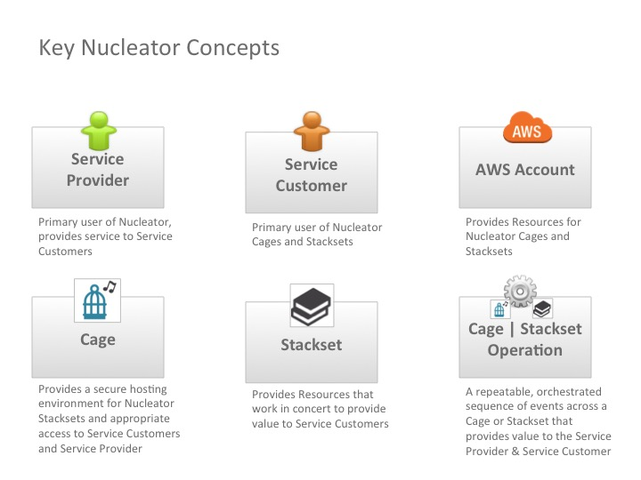
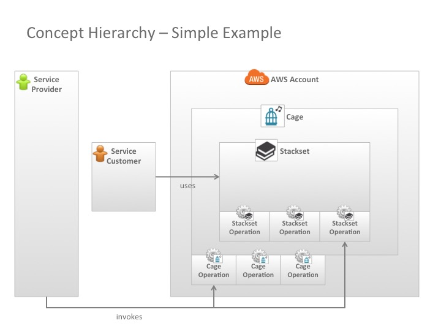
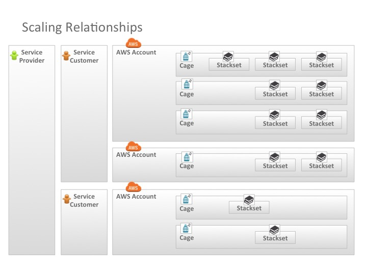
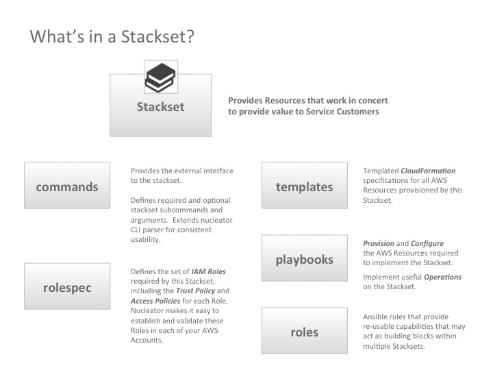
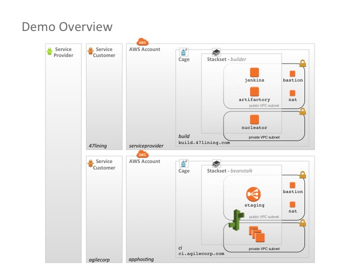

Nucleator Concepts and Domain Model
Nucleator defines the following key concepts to allow you to create scalable, secure and redundant AWS architectures.
- Customer
Nucleator can support multiple Customers in each Nucleator config. In a simple Nucleator installation, there may only be a single Customer, for your company. When using Nucleator to support managed services engagements, there may be a Customer for your company, and multiple additional Customers for your company's customers, or for your customer's customers.
In Nucleator, each Customer has a corresponding DNS domain (e.g.
47lining.com, orinternalgroup.example.com) through which that customer's resources can be accessed.Nucleator can manage one or more AWS Accounts per Customer. Each Customer must specify at least one AWS Account.
- Cage
A Cage is a distinct VPC, provisioned on behalf of a single customer, within which additional infrastructure can be deployed. A Cage in Nucleator is similar to a Cage in physical data center.
In Nucleator, each Cage is named based on its purpose, and is resolved via DNS as a subdomain of the Cage's Customer's DNS domain (e.g.
build.47lining.com).Each Cage is provisioned within exactly one of the Cage's Customer's AWS Accounts. The configuration for the Cage specifies the AWS Account in which the Cage should be provisioned.
One or more Stacksets can be provisioned within each Cage.
- AWS Account
Nucleator can manage AWS infrastructure that is deployed across one or more AWS Accounts for each Customer. Allocation of infrastructure to AWS Accounts is managed at the granularity of a Cage. Each Cage is provisioned in exactly one AWS Account. Any Stacksets provisioned within that Cage will be provisioned within the same AWS Account as the Cage.
- Stackset
- A Stackset is a defined set of AWS CloudFormation Stacks whose creation, updates and deletes are orchestrated by Nucleator. Stacksets implement useful and often re-usable functionality that build upon a Nucleator Cage, and are often based upon AWS Reference Architectures. For example, the
builderStackset, provisioned within thebuildCage provides a Nucleator user interface and other services useful for continuous integration and deployment environment maintenance that are accessible vianucleator.build.47lining.com,nucleator-ui.build.47lining.comandartifactory.build.47lining.com.
The diagram below illustrates key concepts used by Nucleator.

The diagram below illustrates key concepts used by Nucleator using a simple example.

The diagram below illustrates Nucleator scaling relationships.

The diagram below describes what is inside of Stackset.

The diagram below illustrates an example deployment.
